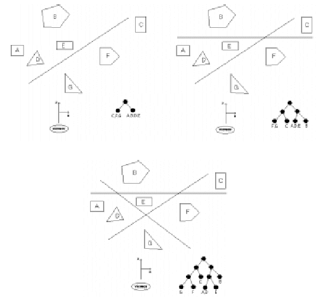

When rendering a scene with multiple objects onto a screen, the order in which the objects are drawn is very important. In general, the farther an object is from the screen, the earlier it should be drawn allowing later, closer objects to be drawn on top of them. If two objects do not overlap, the order of drawing is immaterial. A binary space-partitioning (BSP) tree is one type of data structure which attempts to simplify the determination of the ordering of objects. It works as follows. Assume that the screen lies in the xy-plane centered on the z-axis and that the z-axis points away from the user looking at the screen. (For our purposes, assume the user lies near - ∞ on the z-axis.) We also assume that all the objects lie on the opposite side of the screen (z > 0). The BSP tree is built by placing a series of planes parallel to the y-axis. The first plane divides space into two regions: a region containing the viewer and a region not containing the viewer. We partition all objects in space according to which of these two regions they lie in, and observe that all objects in the region containing the viewer should be drawn after all the objects in the other region. The BSP tree can be viewed at this point as a root with only two children, each child containing one of the partitions. We can now add a second plane, which subdivides the space again. We split each of the two partitions from the rst plane in two, making a total of 4 partitions, and the resulting BSP tree now has three levels, with the partitions in the leaves (note that some of these partitions may contain several objects and some may contain none). This process is continued until each partition has at most one object in it, or until some predetermined number of planes has been used. The diagram below gives an example of using 1, 2 and 3 planes (looking down along the y-axis). For simplicity we assume that all objects lie parallel to the z-axis, so we need only deal this 2-d image to determine the BSP tree.

Assuming you have split the partitions correctly, a simple traversal of the BSP tree will give you an appropriate ordering for which to render the objects in the scene. Note in the example above that once a node contains just one object it need not be split as additional planes are added.
Input will consist of several problem instances. The first line of each instance will contain a positive integer n <= 20 indicating the number of objects in the scene. The next n lines will contain a description of these objects using the format m x1 z1 x2 z2 .. xm zm, where m is the number of vertices in the object and the remaining values are the vertices of the intersection of the object with the xz-plane. All objects will have between 3 and 6 vertices. Objects are assumed to be labeled "A", "B", "C", ... in the order they are defined. Next in the input le will be a positive integer p <= 10 indicating the number of planes used to create the BSP tree. The last p input lines will contain a description of each plane of the form x1 z1 x2 z2 representing two points on the intersection line of the plane and the xz-plane. You may assume that no line will intersect any object (including edges and vertices) and that no plane is parallel to the z-axis. All coordinates will be integers.
Output will consist of a single line for each instamce containing the names of the objects in the order that they should be rendered for the specified BSP tree. In the case when some partition contains two or more objects, you should list the objects in alphabetical order.
10 3 65 5 66 5 65 6 3 65 123 66 123 65 124 3 122 176 123 176 122 177 3 56 23 57 23 56 24 3 11 49 12 49 11 50 3 167 111 168 111 167 112 3 57 123 58 123 57 124 3 130 6 131 6 130 7 3 100 85 101 85 100 86 3 11 28 12 28 11 29 10 159 165 -131 -177 -153 -192 -197 158 -77 -86 -98 30 -177 59 146 63 192 -117 92 43 121 -67 -62 -134 41 -81 130 196 95 -185 -89 154 -163 -179 93 175 113 41 -92 -28
BCGEJFIHDA